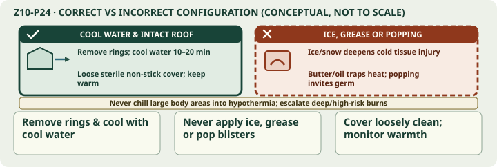

Z10-P24 · Wilderness medicine · New manuscript
Cool minor thermal burns with cool water and protect intact blisters
Halt thermal tissue injury safely on small superficial burns while preventing secondary infection and cold injury.
When it applies · Small, superficial flame, hot-pot, or steam scald burns without deep charring or high-risk body zones.
Equipment · Cool (not icy) clean potable water, clean non-stick sterile gauze, and dry insulating layers for the rest of the body.

Actions
- Stop the burning process immediately, remove watches, rings, belts, and loose non-stuck clothing near the burn before swelling starts, and cool the minor burn under cool running potable water for 10 to 20 minutes.[M07, W29]
- Never apply ice, snow, butter, cooking oil, toothpaste, or unapproved ointments to a fresh burn—ice deepens tissue damage and greasy substances trap heat and bacteria.[M07]
- Cover the cooled burn loosely with clean non-stick sterile gauze, keep intact burn blisters unbroken as a natural sterile barrier, and keep the patient warm overall to prevent hypothermia.[M07, E05]
Failure recognition · Packing snow directly onto a camp-stove scald or popping intact blisters with a pocketknife in dirty camp conditions.[M07]
Verify · Confirm rings/tight gear are removed, cooling used cool (not icy) water, blisters remain intact, and dressing is loose and clean.[M07, ED]
Stop or change course · Any worsening blistering, deep pale/charred skin, high-risk zone involvement, or uncontrolled pain escalates immediately to clinical burn care.[M07, T02]
Evidence and editorial notes
- E05 · NWS · What To Do If You're Caught in a Winter Storm (current web edition)
- Section: Outside and find shelter · Conditions: Cold, wet or windy winter conditions
Support: Block wind, stay dry and keep off cold ground. Keep exposure reduction separate from making a fire.
Limitations: Improvised windbreaks do not provide rated thermal protection or snow-load capacity. · Conflicting evidence: None; aligns with CDC-H.
Editorial note: Separates wind, ground, and moisture heat-loss pathways. · Specialist reviewer: Cold-weather shelter specialist
Primary source · checked 2026-11-24 - M07 · NIH / MedlinePlus · Burns (current web edition)
- Section: Thermal Burn Cooling, Covering, and Severity Escalation · Conditions: Minor vs major thermal burns (flame, scald, contact)
Support: Cool minor superficial burns with cool (not icy) running water, remove constricting rings/clothing not stuck to skin, cover loosely with clean non-stick dressing, and seek emergency care for deep, large, facial, hand, foot, genital, joint, or airway burns.
Limitations: Never apply ice, butter, grease, or ointments to fresh burns, and do not pop intact blisters. · Conflicting evidence: None; aligns with ARC/ABA lay burn first aid.
Editorial note: Establishes burn-cooling limits and automatic clinical-escalation zones. · Specialist reviewer: Burn care and wilderness medicine
Primary source · checked 2026-11-24 - T02 · American Red Cross · First Aid Steps (current web edition)
- Section: First Aid Steps > Call 9-1-1 · Conditions: Lay emergency response to unresponsiveness, abnormal breathing or severe bleeding
Support: Activate EMS and get needed equipment. Follow dispatcher directions and act within training.
Limitations: Remote locations may delay EMS arrival, requiring sustained stabilization after activation. · Conflicting evidence: None; aligns with NPS-E.
Editorial note: Mandates early emergency activation and dispatcher adherence. · Specialist reviewer: EMS and wilderness medicine
Primary source · checked 2026-11-24 - W29 · CDC · How to Make Water Safe in an Emergency (2024-09-19)
- Section: Use safe water for drinking, brushing teeth and food preparation · Conditions: Applicable emergency-water advice and permissible uses under active local advisory
Support: Use confirmed safe water for oral and food-contact tasks. Follow current local instructions for each use.
Limitations: Infant formula requires separate P26 conditions. Wound care requires the appropriate care source. · Conflicting evidence: See A02 claim audit for boundaries.
Editorial note: Separates potable-required tasks from non-potable utility uses. · Specialist reviewer: Public health and wilderness medicine
Primary source · checked 2026-11-24
Source lineage · NIH MedlinePlus Burns; new manuscript · Classification · New manuscript.